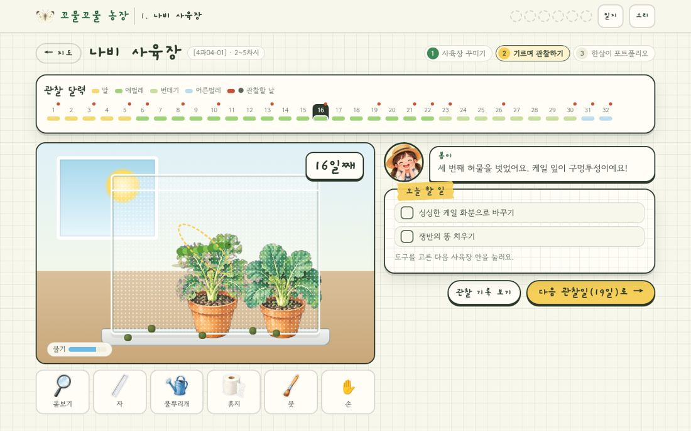
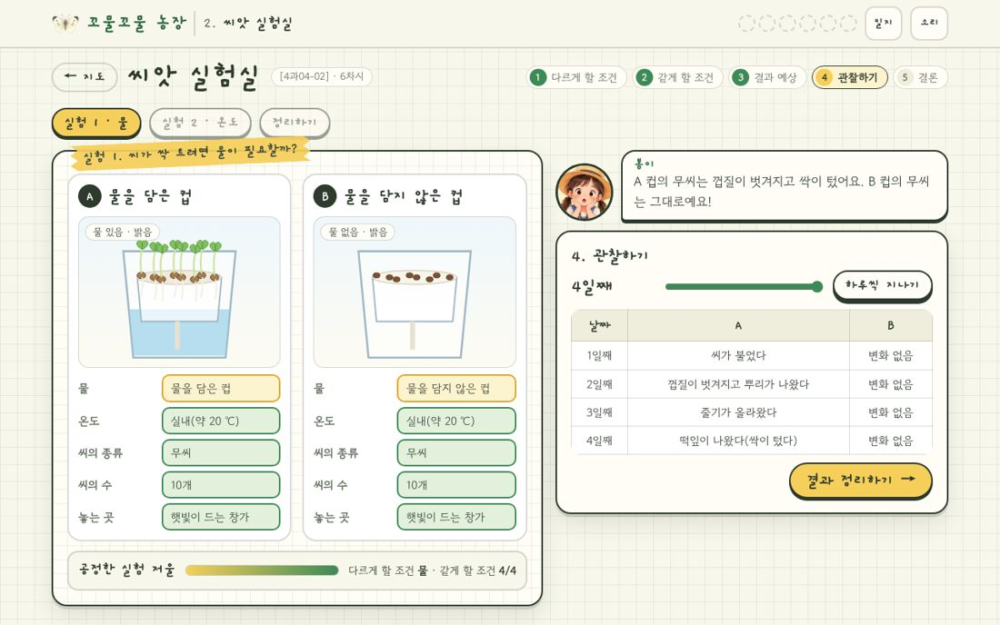
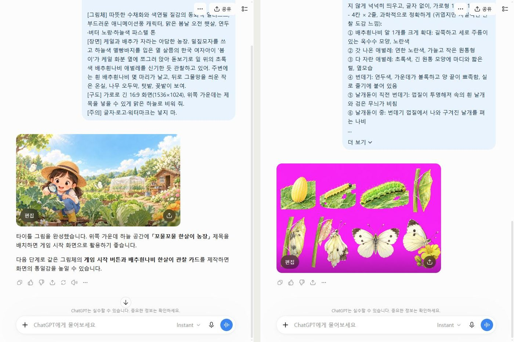
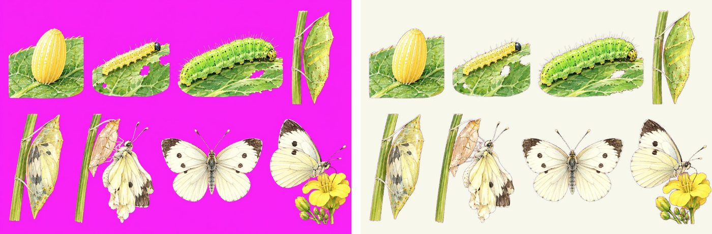
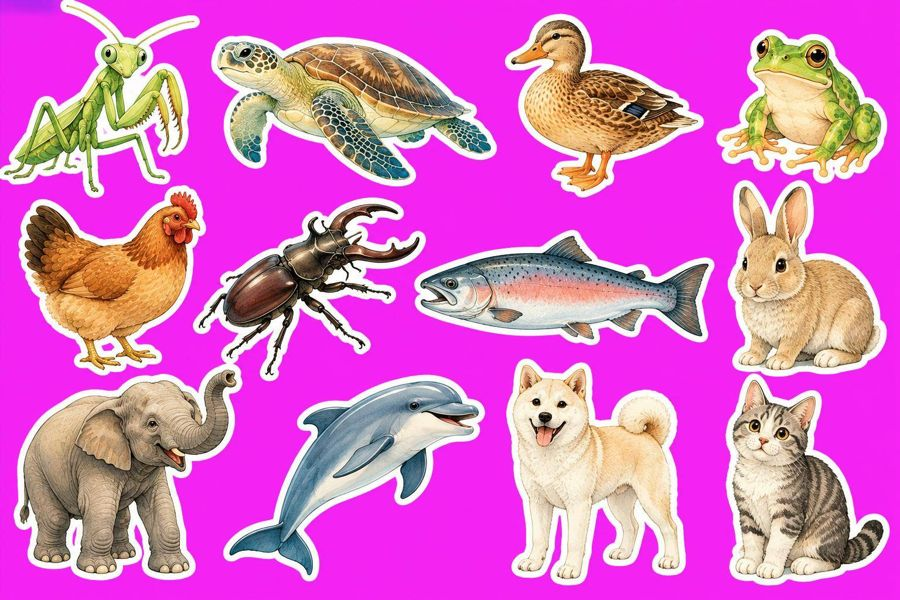

지도서와 성취기준을 읽고 → 수업 흐름에 맞춰 게임을 설계하고 → AI와 대화하며 코딩하고 → ChatGPT로 그림을 만들고 → GitHub에 올리는 전 과정을 그대로 따라 할 수 있게 정리했어요. 프롬프트는 복사 버튼으로 바로 가져다 쓰세요.
제작 과정 영상 · 교육과정 분석부터 GitHub 배포까지 (약 3분 20초)
① 교육과정 → 설계
3학년 1학기 과학 4. 생물의 한살이는 배추흰나비를 한 달 동안 직접 기르는 단원이에요. 그런데 실제 사육은 알을 구하기 어렵거나, 날개돋이 순간을 놓치거나, 중간에 애벌레를 잃기도 하지요. 그래서 이 게임은 실제 관찰을 대신하지 않고 곁에서 돕는 것을 목표로, 지도서 13차시 흐름을 농장의 여섯 구역으로 옮겼어요.
케일 화분 실험을 직접 설계(물의 양 / 햇빛의 양), 10일 관찰 그래프, 실험 뒤 돌보기
[4과04-03] 한살이 유형이 다양함을 소개하는 자료 만들기
8~9차시
4. 한살이 도감관
알을 낳는 동물·새끼를 낳는 동물 분류, 개구리·닭·개 한살이 순서, 한해살이·여러해살이 분류, 계절 슬라이더
10~11차시
5. 한살이 박람회
한살이 소개 카드 만들기 → 게시판 전시, 그림 파일 저장
진로
12~13차시
6. 스마트 팜
센서 규칙(흙 습도·빛·온도) 만들기 → 7일 시뮬레이션, 스마트 팜 전문가 진로 카드
지도서에서 꼭 가져온 사실
알: 길쭉하고 주름진 옥수수 모양, 노란색, 약 1 mm, 5~7일 뒤 애벌레가 나오며 알껍데기를 먹는다.
애벌레: 처음엔 연한 노란색, 잎을 먹으며 초록색 · 허물을 4번 벗으며 약 2 mm → 30 mm · 15~20일.
번데기: 가운데가 볼록하고 양 끝이 뾰족, 약 25 mm, 주변과 비슷한 색, 7~10일 · 먹지 않고 거의 움직이지 않지만 살아 있다(오개념).
어른벌레: 머리·가슴·배, 가슴에 다리 3쌍과 날개 2쌍(곤충) · 2~3주를 산다.
씨가 싹 트는 조건은 물과 알맞은 온도로, 식물이 자라는 조건은 물과 햇빛으로 한정(지도상의 유의점). ‘빛이 있어야 싹이 튼다’, ‘온도가 높을수록 잘 자란다’, ‘풀은 모두 한해살이’는 오개념으로 다룸.
동물은 알을 낳는 동물 / 새끼를 낳는 동물, 식물은 한해살이 / 여러해살이(두해살이는 여러해살이에 포함)로 구분.

나비 사육장: 관찰일마다 할 일을 끝내야 다음 날로 넘어가요. 손을 고르면 “만지지 않아요!”라고 알려 줘요.
② 바이브코딩 프롬프트
코드를 한 번에 만들지 않고, 기획서 → 데이터 → 화면별 기능 → 점검 순서로 나눠서 부탁했어요. 지도서 PDF와 성취기준을 첨부하고 시작하면 좋아요.
① 기획서너는 초등 과학 교사이자 교육용 게임 기획자야. 첨부한 지도서(3학년 1학기 4. 생물의 한살이)와 성취기준 [4과04-01]~[4과04-03]을 읽고, 13차시 흐름을 따라가는 웹 게임 '꼬물꼬물 한살이 농장'을 기획해 줘.
- 농장 지도에서 6개 구역(나비 사육장, 씨앗 실험실, 쑥쑥 텃밭, 한살이 도감관, 한살이 박람회, 스마트 팜)으로 이동해.
- 구역마다 연결되는 차시, 성취기준, 학생이 하는 활동, 남는 기록(포트폴리오)을 표로 정리해.
- 지도서에 나온 사실(단계별 생김새·크기·기간, 실험 조건과 결과, 오개념)을 따로 표로 뽑아 줘. 이 표가 게임 내용의 기준이야.
② 내용 데이터 파일기획서의 내용을 js/data.js 한 파일에 데이터로 모아 줘.
- 관찰 달력: 날짜, 단계, 크기(mm), 그날 할 일(물 주기·똥 치우기·잎 갈아 주기·떨어진 애벌레 돕기), 봄이의 말, '알아 두기' 사실
- 관찰 기록장: 단계마다 모양·색깔·크기·움직임 4문항, 보기 3개(첫 번째가 정답 — 화면에서는 섞어서)
- 씨앗·텃밭 실험의 조건 표(A는 기준, B는 처음에 일부러 몇 개 다르게), 예상 보기, 결과
- 동물 12종·식물 12종과 유형, 마무리 퀴즈 10문항(해설 포함)
화면 코드는 이 데이터를 읽기만 하게 해서, 나중에 내용만 고치기 쉽게 해 줘.
③ 나비 사육장 시뮬레이션js/butterfly.js를 만들어 줘.
1) 사육장 꾸미기: 준비물 11개 중 필요한 8개만 사육장 자리로(누르거나 끌어다 놓기). 틀리면 왜 필요 없는지 봄이가 설명. 다음엔 기를 때 약속 O·X 4문항.
2) 기르기: 1~32일 관찰 달력, 관찰일마다 할 일 체크리스트. 도구(돋보기·자·물뿌리개·휴지·붓·손)를 고르고 사육장을 눌러 실행. 손으로 생물을 누르면 '만지지 않아요' 안내. 할 일을 다 해야 '다음 관찰일' 버튼이 열리고, 밤이 지나가는 연출.
3) 부화·허물 벗기·번데기·날개돋이는 작은 애니메이션으로. 애벌레 길이는 mm에 비례해서 커지고, 색은 연노랑 → 초록.
4) 돋보기 창에서 자를 끌어 0 눈금을 꼬리에 맞추면 길이를 읽을 수 있게.
5) 관찰 기록장 모달: 4문항 + 그림 그리기 캔버스(색연필 7색, 지우개, 되돌리기) + 한 줄 쓰기. 저장하면 농장 일지에 모여.
④ 공정한 실험 설계 (씨앗·텃밭)js/seed.js와 js/garden.js를 만들어 줘. 두 컵(두 화분)의 조건 표를 나란히 보여 줘.
- 먼저 '다르게 할 조건'을 하나 고르고, B의 빨간 칸(다른 조건)을 눌러 A와 같게 맞추면 '공정한 실험 저울'이 차오르게.
- 온도 실험은 냉장고 안이 어두우니까, 냉장고 밖 컵도 어둠상자에 넣어야 빛 조건이 같아지도록.
- 예상하기 → 날짜 막대로 관찰(씨앗은 SVG로 불기·뿌리·떡잎을 그려 줘) → 결론 고르기(POE).
- 텃밭은 10일 키 그래프와 잎·줄기 관찰 표. 결과는 지도서대로: 물이 없으면 시듦, 햇빛이 없으면 잎이 연해지고 줄기가 가늘고 약함.
- 마지막에 오개념 O·X와 '실험이 끝난 식물 돌보기'.
⑤ 도감관 · 박람회 · 스마트 팜js/museum.js, js/expo.js, js/smart.js를 만들어 줘.
- 도감관: 동물 카드를 '알을 낳는 동물 / 새끼를 낳는 동물' 바구니로, 식물을 '한해살이 / 여러해살이'로 분류. 개구리·닭·개 한살이 순서 맞히기, 봉숭아와 사과나무를 비교하는 계절 슬라이더.
- 박람회: 생물 고르기 → 단계 순서 놓기 → 유형 고르기 → 설명 쓰기 → 색 고르고 게시판에 전시. 카드를 PNG로 저장(캔버스).
- 스마트 팜: '만약 흙이 마르면 → ?' 같은 규칙 3개에 장치 카드를 놓고 7일 시뮬레이션. 틀린 규칙은 빨간색으로 알려 주고 다시 고치게. 끝나면 스마트 팜 전문가 진로 카드와 '나의 꿈' 쓰기.
끌어 놓기는 손가락·마우스·키보드 모두 되게(누르고 → 다시 누르기도 가능).
⑥ 저장 · 농장 일지 · 선생님 모드진행 상황은 localStorage에 저장하되, 저장이 막힌 브라우저에서도 게임은 계속되게 try/catch로 감싸 줘. '농장 일지' 화면에 관찰 기록(그림 포함), 실험 기록, 도감 분류, 소개 카드, 스마트 팜 규칙, 퀴즈 점수를 모으고 A4로 인쇄되게. 선생님 모드(비밀번호 2022)에는 차시 안내표, 나비 사육장 날짜 바로 가기, 시연용 도장 채우기, 기록 지우기를 넣어 줘.
⑦ 점검·다듬기 요청은 이렇게(스크린샷 첨부) 휴대폰 폭(390px)에서 지도 이름표가 서로 겹치고, 단계 표시줄이 화면 밖으로 나가. 좁은 화면에서는 지도에 번호만 보이게 하고, 어떤 화면도 가로로 스크롤되지 않게 고쳐 줘. 고친 뒤 Playwright로 여섯 구역을 처음부터 끝까지 자동으로 플레이해서 콘솔 오류가 없는지 확인해 줘.
요령“지도서 ○쪽에 이렇게 나와 있어”처럼 근거를 붙이면 AI가 사실을 지어내지 않아요. 기능을 하나씩 부탁하고, 매번 화면을 직접 눌러 본 뒤 다음으로 넘어가세요.

씨앗 실험실: 같게 할 조건을 모두 맞추면 ‘공정한 실험 저울’이 가득 차요.
③ ChatGPT 그림
그림 13장을 한 대화방에서 이어서 만들었어요. 첫 그림(타이틀)으로 그림체를 정하고, 다음부터는 “같은 그림체로”라고만 하면 캐릭터와 색감이 통일돼요.

왼쪽: 타이틀 그림 프롬프트와 결과 · 오른쪽: 배추흰나비 한살이 스프라이트 시트
1. 타이틀 그림 (그림체 정하기)꼬물꼬물 한살이 농장 — 초등 3학년 과학 '생물의 한살이' 학습 게임의 타이틀 그림을 그려 줘.
[그림체] 따뜻한 수채화와 색연필 질감의 동화책 일러스트, 부드러운 애니메이션풍 캐릭터, 맑은 봄날 오전 햇살, 연두·버터 노랑·하늘색 파스텔 톤
[장면] 케일과 배추가 자라는 아담한 농장. 밀짚모자를 쓰고 하늘색 멜빵바지를 입은 열 살쯤의 한국 여자아이 '봄이'가 케일 화분 옆에 쪼그려 앉아 돋보기로 잎 위의 초록색 배추흰나비 애벌레를 신기한 듯 관찰하고 있어. 주변에는 흰 배추흰나비 몇 마리가 날고, 뒤로 그물망을 씌운 작은 온실, 나무 오두막, 텃밭, 꽃밭이 보여.
[구도] 가로로 긴 16:9 화면(1536×1024), 위쪽 가운데는 제목을 넣을 수 있게 맑은 하늘로 비워 줘.
[주의] 글자·로고·워터마크는 넣지 마.
2. 캐릭터 시트 (초록 배경)좋아! 같은 그림체로 주인공 '봄이'의 캐릭터 시트를 만들어 줘. 게임 화면에 오려 붙일 거야.
- 배경: 그림자 없는 단색 크로마키 초록(#00FF00). 캐릭터의 옷·소품에는 초록색을 쓰지 마.
- 봄이: 위 그림과 같은 아이 (밀짚모자에 갈색 띠, 크림색 긴소매 티셔츠, 청색 멜빵바지, 노란 장화, 양 갈래 머리, 목에 건 돋보기)
- 왼쪽 1/3: 정면으로 서서 한 손을 흔들며 웃는 전신
- 오른쪽 2/3: 상반신 표정 3개를 한 줄로 나란히 — ① 활짝 웃음 ② 깜짝 놀람(입을 동그랗게) ③ 엄지척 칭찬
- 그림끼리 겹치지 않게 간격을 넉넉하게, 글자 없이, 가로형 1536×1024
3. 배추흰나비 한살이 (마젠타 배경)고마워! 이번엔 같은 수채화 그림체로 '배추흰나비 한살이' 스프라이트 시트를 만들어 줘. 게임에서 하나씩 오려 쓸 거야.
- 배경: 그림자 없는 단색 마젠타(#FF00FF). 그림끼리 겹치지 않게 넉넉히 띄우고, 글자 없이, 가로형 1536×1024
- 4칸 × 2줄, 과학적으로 정확하게 (귀엽지만 사실적인 관찰 도감 느낌):
① 배추흰나비 알 1개를 크게 확대: 길쭉하고 세로 주름이 있는 옥수수 모양, 노란색
② 갓 나온 애벌레: 연한 노란색, 가늘고 작은 원통형
③ 다 자란 애벌레: 초록색, 긴 원통 모양에 마디와 짧은 털, 옆모습
④ 번데기: 연두색, 가운데가 볼록하고 양 끝이 뾰족함, 실로 줄기에 붙어 있음
⑤ 날개돋이 직전 번데기: 껍질이 투명해져 속의 흰 날개와 검은 무늬가 비침
⑥ 날개돋이 중: 번데기 껍질에서 나와 구겨진 날개를 펴는 나비
⑦ 어른벌레(위에서 본 모습, 날개 활짝): 흰 날개, 앞날개 끝이 검고 검은 점 무늬, 더듬이 1쌍, 다리 3쌍
⑧ 어른벌레 옆모습: 날개를 접고 노란 꽃에 앉아 대롱 모양 입으로 꿀을 먹음
4. 농장 지도멋져! 이번엔 같은 그림체로 게임의 '농장 전체 지도'를 그려 줘. 아이들이 구역을 눌러 이동하는 메인 화면이야.
- 가로형 16:9, 위에서 비스듬히 내려다본 따뜻한 동화책 지도, 맑은 봄날
- 구불구불한 흙길로 이어진 6개 구역 (서로 충분히 떨어져 있게):
① 왼쪽 위: 나비 사육장 — 하얀 그물망을 씌운 작은 유리 온실, 안에 케일 화분
② 가운데 위: 씨앗 실험실 — 작은 나무 오두막, 창가에 새싹 컵들
③ 왼쪽 아래: 쑥쑥 텃밭 — 케일과 채소가 자라는 밭, 물뿌리개
④ 가운데: 한살이 도감관 — 아담한 박물관 건물(기둥, 둥근 지붕)
⑤ 오른쪽 아래: 한살이 박람회 — 알록달록한 천막과 빈 게시판
⑥ 오른쪽 위 언덕: 스마트 팜 — 현대적인 유리 온실, 태양광 패널, 작은 센서 기둥
- 연못, 나무, 꽃밭, 흰 나비, 구름을 곳곳에. 글자·숫자·간판 글씨는 넣지 마.
5. 준비물 스티커 시트 (흰 테두리 + 마젠타)정말 예뻐! 이번엔 같은 그림체로 '준비물·실험 도구' 스티커 시트를 만들어 줘.
- 배경: 단색 마젠타(#FF00FF). 각 그림은 두꺼운 흰 테두리가 있는 다이컷 스티커처럼 만들고, 서로 넉넉히 띄워 줘. 글자 없이, 가로형 1536×1024
- 6칸 × 3줄, 모두 18개:
1 케일 화분 / 2 지퍼 달린 흰색 사육 망(정육면체 그물 텐트) / 3 플라스틱 쟁반 / 4 작은 붓 / 5 돋보기 / 6 투명한 자
7 물뿌리개 / 8 관찰 기록장(공책과 연필) / 9 핀셋 / 10 투명 비닐봉지 / 11 알록달록 사탕 / 12 벌레 잡는 스프레이 통
13 무씨 봉투 / 14 씨앗 실험 컵(큰 컵 안에 작은 컵, 부직포 심지) / 15 공기 구멍이 뚫린 종이 상자(햇빛 차단 장치) / 16 온도계 / 17 두루마리 휴지 / 18 작은 냉장고
6~9. 도감 스티커 (같은 틀로 목록만 바꿔서)좋아! 이번엔 '한살이 도감'에 쓸 동물 스티커 시트야. 같은 수채화 그림체로 그려 줘.
- 배경: 단색 마젠타(#FF00FF), 두꺼운 흰 테두리 다이컷 스티커, 서로 넉넉히 띄우기, 글자 없이, 가로형 1536×1024
- 4칸 × 3줄, 12마리 (다 자란 모습, 귀엽지만 실제 생김새가 잘 드러나게):
1 사마귀 / 2 바다거북 / 3 오리 / 4 개구리
5 닭(암탉) / 6 사슴벌레 / 7 연어 / 8 토끼
9 코끼리 / 10 돌고래 / 11 개(진돗개) / 12 고양이
(같은 틀로 ‘동물의 한살이 단계’(개구리 알~올챙이~새끼 개구리, 달걀~병아리~어린 닭, 갓 태어난 강아지~큰 강아지 …), ‘식물 도감’(벼·봉숭아·나팔꽃·강낭콩·옥수수·강아지풀 / 민들레·은행나무·사과나무·비비추·감나무·개나리), ‘식물의 한살이와 계절’(봉숭아 씨~새싹~꽃~열매~겨울, 사과나무 봄·여름·가을·겨울눈)을 만들었어요.)
10. 실험 장면 소품 (테두리 없이)정말 고마워! 이번엔 실험 장면에 쓸 '케일 화분과 새싹 컵' 그림이야. 같은 수채화 그림체로 그려 줘.
- 이번엔 스티커 흰 테두리 없이, 그림자 없는 단색 마젠타(#FF00FF) 배경. 서로 넉넉히 띄우고 글자 없이, 가로형 1536×1024
- 4칸 × 2줄, 화분은 모두 같은 크기의 갈색 토분을 정면에서 본 모습:
1 싱싱하게 잘 자란 케일 화분(크고 진한 초록 잎, 굵은 줄기)
2 애벌레가 갉아 먹어 잎에 구멍이 숭숭 난 케일 화분
3 물이 부족해 잎과 줄기가 축 처지고 시든 케일 화분
4 햇빛을 받지 못해 잎이 연한 노란 연두색이고 줄기가 가늘고 약한 케일 화분
5 실험을 시작할 때의 작고 어린 케일 모종 화분
6 투명 컵 속 부직포 위 무씨에서 싹이 터 떡잎이 난 모습
7 투명 컵 속 부직포 위 무씨가 싹 없이 그대로인 모습
8 구멍이 뚫린 종이 상자(햇빛 차단 장치)를 씌운 케일 화분
11~12. 배경 그림 (스마트 팜 · 박람회)좋아! 이번엔 같은 수채화 그림체로 '스마트 팜' 안쪽 장면을 그려 줘. 아이들이 센서 규칙을 정하는 게임 배경이야.
- 가로형 16:9, 밝은 낮, 따뜻한 동화책 느낌
- 유리 온실 안: 가운데 긴 재배대에 케일과 상추가 줄지어 자람, 천장에 LED 조명 막대, 재배대 위 스프링클러 노즐, 기둥에 붙은 작은 센서 상자 3개(물방울·해·온도계 모양 아이콘), 열 수 있는 천장 창문과 환풍기, 벽에 걸린 태블릿 화면(빈 화면)
- 사람은 그리지 말고, 화면 위쪽 1/4은 비교적 단순하게 비워 줘. 글자 없이
배경색 고르는 법초록 식물·애벌레가 있는 그림은 마젠타(#FF00FF), 초록이 없는 캐릭터는 초록(#00FF00) 배경으로 부탁해요. 스티커 시트는 흰 테두리를 넣어 달라고 하면 오려 낼 때 가장자리가 깔끔해요. ChatGPT가 그림 두 장 중 고르라고 하면 화면 구성이 더 단순한 쪽을 고르세요.
④ 그림 다듬기 (배경 지우기 · 시트로 묶기)

왼쪽: ChatGPT 원본(마젠타 배경) · 오른쪽: 배경을 지우고 가장자리의 분홍빛을 정리한 결과
방법 고르기
ChatGPT에 바로 부탁: “배경을 투명하게 PNG로” — 가장 간단해요.
Canva · 파워포인트: ‘배경 제거’ 버튼으로 한 장씩.
파이썬(AI에게 부탁): 여러 장을 한 번에. 이 게임은 이 방법을 썼어요.

스티커 시트 원본 — 12마리를 한 장에
배경 지우기 · 시트로 묶기 프롬프트첨부한 그림은 마젠타(#FF00FF) 배경에 스티커 12개가 있는 시트야. 파이썬으로
1) 마젠타 배경을 투명하게 지우고, 가장자리에 남은 분홍빛은 회색 쪽으로 정리해 줘(반투명 픽셀은 배경색을 빼서 원래 색을 되살리기).
2) 서로 붙어 있는 스티커는 조금 깎아서(침식) 나눈 뒤 원래 모양으로 되돌려 하나씩 오려 줘. 순서는 왼쪽 위부터 읽는 순서로.
3) 오린 그림을 240×240 칸에 가운데 맞춰 4칸씩 줄지어 다시 붙이고 WebP 한 장으로 저장해 줘. 게임에서는 CSS background-position으로 칸 번호만 골라 쓸 거야.
왜 시트로 묶나요?GitHub 웹 업로드는 한 번에 100개 파일까지라서, 그림 90장을 따로 올리는 대신 시트 7장으로 묶었어요. 파일 수도 줄고 화면도 빨리 열려요.
⑤ GitHub 배포
github.com에 로그인 → 오른쪽 위 ＋ → New repository → 이름 life-farm → Public → Create repository
uploading an existing file을 누르고 life-farm 폴더 안의 파일과 폴더(index.html, css, js, assets, guide, worksheet, video, .nojekyll, README.md)를 전부 끌어다 놓기 → Commit changes
Settings → Pages → Branch main / (root) → Save → 1~2분 뒤 https://내아이디.github.io/life-farm/
아카이브(vibe-archive)도 같은 계정에 있으면 카드에서 바로 이어져요.
자주 막히는 곳 · 폴더째 올리면 주소가 /life-farm/life-farm/처럼 한 단계 깊어져요. 폴더 안의 것을 올리세요. · 파일 하나는 25 MB까지(영상은 압축해서 올렸어요). · 파일 이름의 대소문자가 다르면 그림이 안 보여요(Map.jpg ≠ map.jpg). · .nojekyll은 숨김 파일이라 안 보이면 ‘숨김 파일 표시’를 켜 주세요.
⑥ 수업 활용
진짜 사육과 함께: 교실 사육장 관찰 → 같은 날 게임 속 관찰 기록장에 글과 그림으로 정리 → 다음 변화 예상. 실제 알을 구하지 못했을 때는 게임으로 한살이 전체를 먼저 경험해요.
차시별로 열기: 선생님 모드(비밀번호 2022)에서 원하는 구역이나 사육 날짜로 바로 갈 수 있어요.
평가 자료: ‘농장 일지’에 관찰 기록(그림 포함), 실험 설계와 결과, 분류, 소개 카드, 퀴즈 점수가 모여요. 포트폴리오 평가와 실험·실습 평가 근거로 인쇄해 쓰세요.
활동지: A4 3쪽 활동지(관찰 기록장 · 실험 설계지 · 소개 카드와 스스로 평가)를 게임과 함께 써요.
기록 저장: 기록은 그 기기의 브라우저에만 저장돼요. 학교 공용 기기라면 수업이 끝날 때 농장 일지를 인쇄하거나 사진으로 남겨 두세요.
⑦ 체크리스트
지도서의 사실(크기·기간·조건·결과)과 게임 내용이 같은가?
‘다르게 할 조건’과 ‘같게 할 조건’ 용어를 지도서처럼 썼는가? (변인이라는 말 대신)
생명 존중: 손으로 만지지 않기, 실험 뒤 식물 돌보기가 들어갔는가?
휴대폰 폭에서도 가로 스크롤 없이 모든 버튼이 눌리는가?
소리 끄기 버튼, 키보드로도 고를 수 있는가?
그림에 글자·워터마크가 없고, 사람 사진이 들어가지 않았는가?
GitHub에 올리기 전 파일 수(100개 이하)와 파일 크기(25 MB 이하)를 확인했는가?